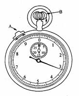
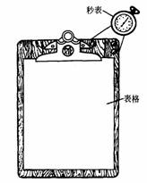

时间研究的工具
1．秒表
时间研究用的计量工具多采用1/100分秒表，如图9-1。此类秒表长针每移动一小格代表1/100分钟，短针每移动一格，代表1分钟。表面左上角外缘的A钮，控制表针的走与停，将A钮向上推，表针即行，将A钮向下推，表针即停止。按下B，表针即回位。
目前国内一般采用电子计时器。用1/100分钟秒表是因为读值、记录容易，整理、计算方便。
 
图9-1 秒表 图9-2观测板
2．观测板
时间研究时使用观测板，以安放秒表和时间研究表格，其结构如图9-2所示。其尺寸应考虑观测者使用方便、顺手、轻便。板的硬度和韧性能承受记录时手的压力。
3．时间研究表格
时间研究表格记录一切有关研究资料及每单元的时间与评比等资料等。其格式可自行设计，其大小按实际情况及观测板的大小而定。
时间研究表格有长周期时间研究表和短周期时间研究表两种。
一般通用的时间研究表，亦称长周期时间研究表(或主表)，主要用于调查和测定工作班内各类间接工时消耗和为确定宽放率提供原始数据，也适用于任何形式的操作。表格的表头部分用于填写测定时的有关资料，其他部分供记录各周程每一动作单元的评比、秒表时间(用连续记时记录的)以及该动作单元时间。
短周期时间研究表也是一般常用的较详细的研究表。主要用于调查和测定作业时间以及手工操作时间，也适用于短周程重复性的操作，其正面记录实际工作环境与状态资料，这些资料将用来证明标准时间是在何种情况下测定的。研究表的反面为现场实际记录之用，按顺序记录各单元的名称，每一单元连续记时法的表面读数以及该单元的时间。
4．其他工具
除了上列的主要工具之外，有时还需要测量距离和速度的工具或仪器，并准备有铅笔、计算器等。